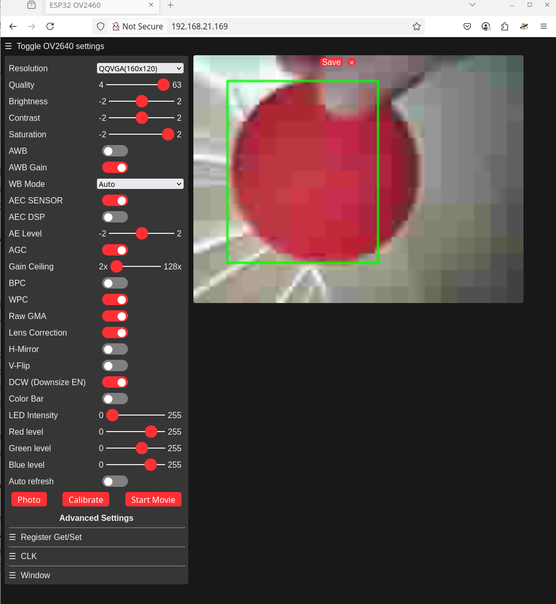

This project uses the ESP32-CAM to detect red objects and offers the function detect() that returns the coordinates if a red object was found. A webpage is generated by this project at port 80 that allows the user to calibrate the camera levels.
red_level, green_level and blue_level parameters of the detect() function.You can test the detection by using the 'Photo' button which will draw a green square on the image where the object was detected. Resolution of the camera has been kept low in order to not overload the capacity of the ESP32 to do tracking.
The sliders 'Red level', 'Green level' and 'Blue level' can be used to set the detection level for the red object. Anything above red and below green and blue will be detected as a valid object.
